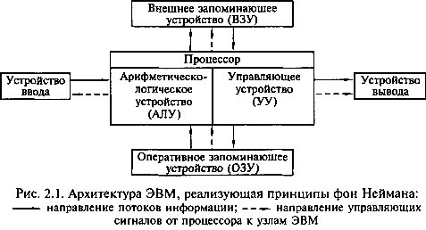
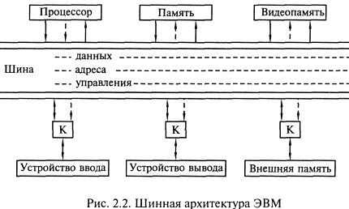
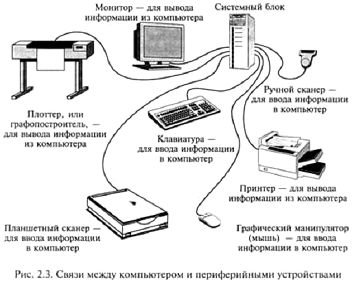
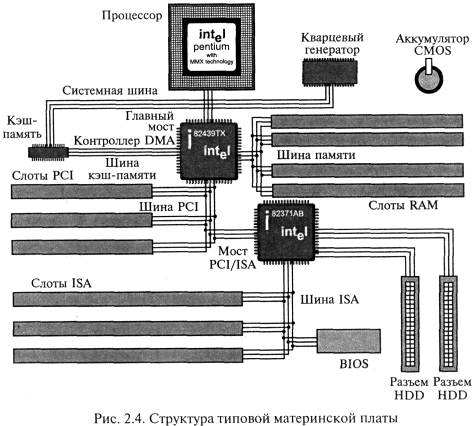
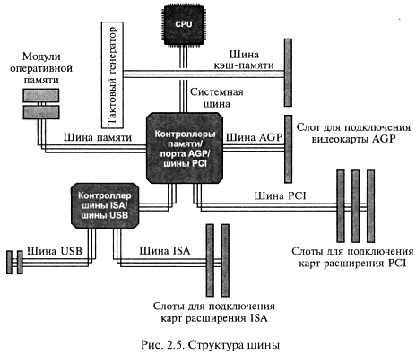
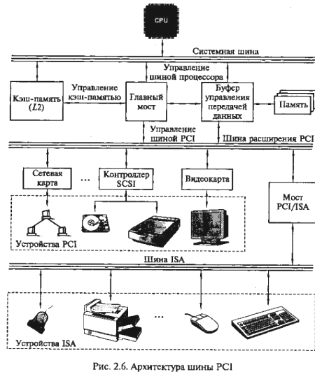
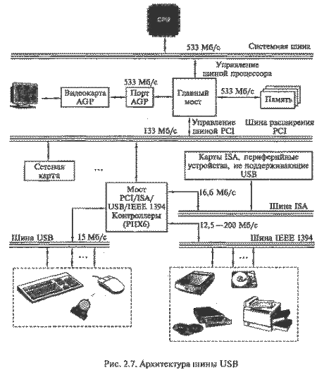
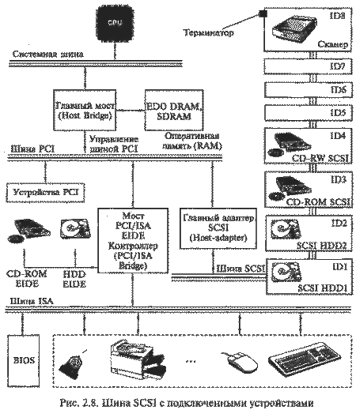

Создание электронно-вычислительных машин в середине XX в. по праву относят к числу самых выдающихся достижений в истории человечества. Вычислительная техника расширила интеллектуальные возможности человека и превратилась в один из решающих факторов научно-технического прогресса. При этом ее развитие неразрывно связано с развитием техники и технологии в ряде промышленных отраслей.
История использования механических и полуавтоматических средств для арифметических операций насчитывает не одно тысячелетие. Первые вычислительные устройства были созданы еще в Древней Греции. В 1642 г. французский математик Блез Паскаль (1623-1662) создал механический арифмометр, позволявший выполнять четыре арифметических действия. Немецкий философ и математик Готфрид Вильгельм фон Лейбниц (1646-1716) изобрел механическую счетную машину, выполняющую сложение и умножение. Англичанин Чарльз Бэббидж (1792-1871) разработал концепцию вычислительной машины с гибкой схемой программирования и запоминающим устройством. Программы вводились с помощью перфокарт — карточек из плотного материала, на которых информация представлялась в виде комбинации отверстий и хранилась в «складе» (памяти) в виде исходных данных и промежуточных результатов.
Наиболее стремительным и последовательным развитием и внедрением вычислительных устройств ознаменовалась первая половина XX в. Возможность создания универсальной вычислительной машины обосновал английский математик Алан Матисон Тьюринг (1912-1954).
В 1943 г. американец Говард Эйкен на основе уже созданных к этому времени электромеханических реле сконструировал и изготовил на одном из предприятий фирмы IВМ вычислительную машину, названную «Марк-1».
Применение электронных ламп при создании первых вычислительных машин способствовало прогрессу в этой области. В 1946 г. в США группой специалистов под руководством Джона Мочли и Преспера Экерта была создана первая вычислительная машина на основе электронных ламп, названная ENIAC (Electornic Numerical Integrator and Computer) - электронный числовой интегратор и вычислитель) и предназначенная для баллистических расчетов. Для выполнения других вычислений требовалось практически заново перестраивать машину.
В 1949 г. был создан компьютер, в котором нашли воплощение принципы построения логической схемы вычислительной машины выдающегося математика Джона фон Неймана (1903-1957). Эта машина использовала гибкую запоминаемую программу, которую можно было изменять, не перестраивая всей машины.
Компьютеры на электронных лампах были громоздкими и стоили очень дорого, поэтому были доступны только крупным компаниям и учреждениям.
Изобретение в 1948 г. транзисторов, заменивших в компьютерах электронные лампы, развитие технологии их массового производства способствовали во второй половине 1950-х гг. существенному усовершенствованию, уменьшению размеров компьютеров и снижению их стоимости. Если компьютеры на электронных лампах занимали целые залы, то первый мини-компьютер, выпущенный фирмой Digital Equipment в 1965 г., был размером всего лишь с холодильник.
|
Таблица 2.1 Основные этапы развития IBM PC-совместимых компьютеров и периферийных устройств.
|
Следующий шаг по пути миниатюризации и совершенствования компьютеров был связан с изобретением интегральных схем. В 1959 г. Роберт Нойс, впоследствии основатель фирмы Intel, предложил создавать на одной пластине как сами транзисторы, так и все соединения между ними, так называемые интегральные схемы, или чипы. Первый компьютер на интегральных схемах выпустила в 1968 г. фирма Burroughs. В 1970 г. конструкторы фирмы Intel создали интегральную схему, аналогичную по своим функциям центральному процессору большой ЭВМ. Первый микропроцессор был способен одновременно обрабатывать только 4 бита информации. Но уже в 1973 г. был выпущен 8-битовый микропроцессор Intel-8008, а в 1974 г. - усовершенствованный вариант Intel-8080, который до конца 1970-х гг. стал стандартом для индустрии микрокомпьютеров. На базе Intel-8080 в 1975 г. был создан первый коммерчески распространяемый компьютер «Альтаир 8800», еще не укомплектованный клавиатурой и монитором, с оперативной памятью 256 байт. Персональный компьютер «Аль-таир» завоевал популярность благодаря тому, что Пол Аллен и Билл Гейтс (будущие основатели фирмы Microsoft) создали для него интерпретатор языка Basic, что позволило пользователям достаточно просто общаться с компьютером. Компьютеры стали продаваться уже в полной комплектации, с клавиатурой и монитором. Спрос на них год от года увеличивался.
В 1979 г. фирма IBM (International Business Machine Corporation) вышла на рынок персональных компьютеров. При этом было решено не создавать принципиально новый персональный компьютер, а использовать блоки, изготовленные другими фирмами. В качестве основного микропроцессора компьютера был выбран новейший тогда 16-разрядный микропроцессор Intel-8088 с емкостью памяти 1 Мб, использовались комплектующие различных фирм, а программное обеспечение было поручено разработать небольшой тогда фирме Microsoft. В августе 1981 г. состоялась официальная презентация нового компьютера под названием IBM PC, который быстро занял ведущее место на рынке, став стандартом персонального компьютера. Сейчас компьютеры, совместимые с IBM PC>, составляют более 90 % всех производимых в мире персональных компьютеров.
Популярность компьютеров IBM PC обусловлена тем, что фирма IBM при разработке руководствовалась принципом открытой архитектуры, т.е. изначально сделала компьютер не единым неразъемным устройством, а обеспечила возможность изменять его конфигурации из отдельных компонентов в зависимости от круга решаемых задач.
Под архитектурой ЭВМ понимается совокупность общих принципов построения ЭВМ, реализующих программное управление работой и взаимодействие основных ее функциональных узлов. Общие принципы построения ЭВМ, которые относятся к архитектуре:
Структура вычислительного средства определяет его конкретный состав на некотором уровне детализации (устройства, блоки, узлы и т.д.) и описывает связи внутри системы.
В соответствии с принципом открытой архитектуры на основной электронной плате компьютера IBM PC (системной, или материнской, плате) размещены только те блоки, которые осуществляют обработку информации (вычисления). Схемы, управляющие всеми остальными (периферийными) устройствами компьютера, - монитором, дисками, принтером и т.д., реализованы на отдельных платах (контроллерах), которые вставляются в стандартные разъемы на системной плате - слоты. К этим электронным схемам подводится электропитание из единого блока питания, а для удобства и надежности все это заключается в общий корпус - системный блок. Открытость архитектуры заключается в том, что для IBM PC-совместимых компьютеров все спецификации взаимодействия внешних устройств с контроллерами, контроллеров с системной платой (шиной) доступны. Основные этапы развития IBM PC-совместимых компьютеров и периферийных устройств даны в табл. 2.1
На разных этапах развития техники и технологии компьютеры назывались по-разному: арифметическо-логическое устройство (АЛУ), программируемое электронно-вычислительное устройство (ПЭВМ или ЭВМ), вычислительная машина, компьютер.
Основные принципы построения логической схемы и структура вычислительной машины, изложенные выдающимся математиком Джоном фон Нейманом, реализованы в первых двух поколениях ЭВМ. Классическая архитектура ЭВМ, построенная по принципу фон Неймана (фон-неймановская архитектура) и реализованная в вычислительных машинах первого и второго поколений, представленная на рис. 2.1 и содержит следующие основные блоки: 
арифметическо-логическое устройство (АЛУ), выполняющее арифметические и логические операции;
управляющее устройство (УУ), организующее процесс выполнения программ;;
внешнее запоминающее устройство (ВЗУ), или памятьь для хранения программ и данных;
оперативное запоминающе устройство (ОЗУ);
устройства ввода и вывода информации (УВВ).
Внешняя память отличается от устройств ввода и вывода тем, что данные в нее заносятся в виде, удобном компьютеру, но недоступном для непосредственного восприятия человеком. Например, накопитель на магнитных дисках относится к внешней памяти; устройством ввода является клавиатура, а монитор и принтер - устройства вывода. Причем если монитор можно отнести к устройствам отображения информации, то принтер - типичное печатающее устройство.
Взаимодействие основных устройств компьютера реализуется в определенной последовательности. В память компьютера вводится программа с помощью какого-либо внешнего устройства. Память компьютера состоит из некоторого числа пронумерованных ячеек. В каждой ячейке могут находиться или обрабатываемые данные, или инструкции программ. Номер (адрес) очередной ячейки памяти, из которой будет извлечена следующая команда программы, указывается специальным устройством - счетчиком команд в УУ.
Управляющее устройство считывает содержимое ячейки памяти, где находится первая инструкция (команда) программы, и организует ее выполнение. Как правило, после выполнения одной команды управляющее устройство начинает выполнять команду из ячейки памяти, которая находится непосредственно за ячейкой, где содержится только что выполненная команда.
Управляющее устройство выполняет инструкции программы автоматически и может обмениваться информацией с оперативным запоминающим устройством и внешними устройствами компьютера. Поскольку внешние устройства работают значительно медленнее, чем остальные части компьютера, управляющее устройство может джать выполнение программы до завершения операции ввода-вывода с внешним устройством. Все результаты выполненной программы должны быть выведены на внешние устройства компьютера, после чего компьютер переходит в режим ожидания каких-либо сигналов от внешних устройств.
Схема устройства современных компьютеров несколько отличается от приведенной выше. Например, арифметическо-логическое и управляющее устройства объединены в единое устройство - центральный процессор - CPU (Central Processing Unit).
Появление ЭВМ третьего поколения было обусловлено переходом от транзисторов к интегральным микросхемам. В них не только были значительно уменьшены размеры базовых функциональных узлов, но и появилась возможность существенно повысить быстродействие процессора. При этом возникло противоречие между высокой скоростью обмена информацией внутри ЭВМ и медленной работой устройств ввода/вывода. Решение проблемы было найдено путем освобождения центрального процессора от функций обмена и передачей их специальным электронным схемам управления работой внешних устройств. Такие схемы имели различные названия: каналы обмена, процессоры ввода/вывода, периферийные процессоры. В последнее время все чаще используется термин «контроллер внешнего устройства», или «контроллер».
Контроллер можно представить как специализированный процессор, управляющий работой какого-либо внешнего устройства по специальным встроенным программам обмена. Например, контроллер дисковода (накопителя на магнитных дисках) обеспечивает позиционирование головки, чтение или запись информации. Результаты выполнения каждой операции заносятся во внутренние регистры памяти контроллера и могут быть в дальнейшем прочитаны центральным процессором. СРU, в свою очередь, выдает задание на выполнение контроллеру. Дальнейший обмен информацией может происходить под руководством контроллера, без участия СРU. Наличие таких интеллектуальных контроллеров — внешних устройств стало важной отличительной чертой ЭВМ третьего и четвертого поколений. Шинная архитектура ЭВМ, содержащей интеллектуальные контроллеры (К), представлена на рис. 2.2. 
Для связи между отдельными функциональными узлами ЭВМ используется общая магистраль - шина, состоящая из трех частей: шины данных, шины адреса и шины управления.
Следует отметить, что в некоторых моделях компьютеров шины данных и адреса объединены: на шину сначала выставляется адрес, а потом данные. Сигналы по шине управления определяют, для какой цели используется шина в каждый конкретный момент.
Такая открытость архитектуры ЭВМ позволяет пользователю свободно выбирать состав внешних устройств, т. е. конфигурировать компьютер. Рассмотрим функции основных устройств компьютера.
Процессор, или микропроцессор, является основным устройством ЭВМ и представляет собой функционально законченное устройство обработки информации. Он предназначен для выполнения вычислений по хранящейся в запоминающем устройстве программе и обеспечения общего управления ЭВМ. Быстродействие ЭВМ в значительной мере определяется скоростью работы процессора.
Память ЭВМ содержит обрабатываемые данные и выполняемые программы, поступающие через устройство ввода/вывода. Память представляет собой сложную структуру, построенную по иерархическому принципу, состоящую из запоминающих устройств различных типов. Функционально она делится на две части - внутреннюю и внешнюю.
Внутренняя память - это запоминающее устройство, напрямую связанное с процессором и предназначенное для хранения выполняемых программ и данных, непосредственно участвующих в вычислениях. Обращение к внутренней памяти ЭВМ осуществляется с высоким быстродействием, но она имеет ограниченный объем, определяемый системой адресации машины. Внутренняя память, в свою очередь, делится на оперативную и постоянную (ПЗУ) память.
Постоянная память обеспечивает хранение и выдачу информации. Содержимое постоянной памяти заполняется при изготовлении ЭВМ и не подлежит изменению в обычных условиях эксплуатации. В постоянной памяти хранятся часто используемые (универсальные) программы и данные, некоторые программы операционной системы, программы тестирования оборудования ЭВМ и др. При выключении питания содержимое постоянной памяти сохраняется. Такой вид памяти называется ROM (Read Only Memory - память только для чтения), или постоянное запоминающее устройство. Значительная часть программ, хранящихся в ROM, связана с обслуживанием ввода/вывода, поэтому ее называют ROM BIOS (Basic Input-Output System - базовая система ввода/вывода).
Оперативная память, по объему составляющая большую часть внутренней памяти, служит для приема, хранения и выдачи информации. При выключении питания содержимое оперативной памяти в большинстве случаев теряется. Эта память называется оперативной, поскольку работает так быстро, что процессору практически не приходится ждать при чтении данных из памяти или записи в нее. Оперативная память обозначается RAM (Random Access Memory - память с произвольным доступом). Объем установленной в компьютере оперативной памяти определяет, с каким программным обеспечением можно на нем работать. При недостаточном объеме оперативной памяти многие программы либо не будут работать совсем, либо будут работать крайне медленно.
Кэш-память - сверхбыстродействующая память, обеспечивающая ускорение доступа к оперативной памяти на быстродействующих компьютерах. Она располагается между микропроцессором и оперативной памятью и хранит копии наиболее часто используемых участков оперативной памяти. При обращении микропроцессора к памяти сначала производится поиск данных в КЕШ-памяти. Поскольку время доступа к кэш-памяти в несколько раз меньше, чем к обычной памяти, а в большинстве случаев необходимые микропроцессору данные уже содержатся в КЕШ-памяти, среднее время доступа к памяти уменьшается.
CMOS-RAM - участок памяти для хранения параметров конфигурации компьютера. Называется так в связи с тем, что эта память обычно выполняется по технологии CMOS, обладающей низким энергопотреблением. Содержимое CMOS-RAM не изменяется при выключении электропитания компьютера. Эта память располагается на контроллере периферии, для электропитания которого используются специальные аккумуляторы. Для изменения параметров конфигурации компьютера в BIOS содержится программа настройки конфигурации компьютера Setup.
Видеопамять в IBM PC-совместимых компьютерах - память, используемая для хранения изображения, выводимого на экран монитора. Эта память обычно входит в состав видеоконтроллера - электронной схемы, управляющей выводом изображения на экран монитора.
Внешняя память предназначена для размещения больших объемов информации и обмена ею с оперативной памятью. Для построения внешней памяти используют энергонезависимые носители информации (диски и ленты), которые являются переносными. Емкость внешней памяти практически не имеет ограничений, а для обращения к ней требуется больше времени, чем к внутренней. ВЗУ по принципам функционирования разделяются на устройства прямого доступа (накопители на магнитных и оптических дисках) и устройства последовательного доступа (накопители на магнитных лентах). Устройства прямого доступа обладают большим быстродействием, поэтому они являются основными внешними запоминающими устройствами, постоянно используемыми в процессе функционирования компьютера. Устройства последовательного доступа используются в основном для резервирования информации.
Устройства ввода/вывода служат для обеспечения общения пользователя с ЭВМ и относятся к периферийным, или внешним устройствам. На рис. 2.3 показаны связи между компьютером и различными периферийными устройствами. 
Необходимыми устройствами ввода/вывода являются монитор, клавиатура, мышь. Монитор принимает изображение от системного блока. Его экран является рабочим полем. С помощью клавиатуры в компьютер вводятся любые тексты, символы, подаются команды и осуществляется управление работой компьютера. Мышь - средство управления курсором на экране монитора.
Сам по себе компьютер не обладает знаниями ни в одной области, все эти знания сосредоточены в программном обеспечении. Программное обеспечение можно разделить на следующие категории.
Системные программы - выполняют функции обеспечения нормальной работы компьютера, его обслуживания и настройки. Среди системных программ особое место занимают операционные системы (ОС) для управления компьютером, запуска программ, обеспечения защиты данных, выполнения различных сервисных функций по запросам пользователя и программ. Каждая ОС состоит как минимум из трех обязательных частей. Ядро, или командный интерпретатор, обеспечивает «перевод» с программного языка на язык машинных кодов. Драйверы расширяют возможности ОС, позволяя ей работать с тем или иным внешним устройством. Драйверы для различных ОС часто поставляются вместе с новыми устройствами или контроллерами. Интерфейс - удобная графическая оболочка, с которой общается пользователь.
Утилиты - комплекты полезных программ, предназначенных для обслуживания и совершенствования работы компьютера.
Тесты - программы для тестирования как программного обеспечения, так и аппаратных ресурсов, которые иногда относят к утилитам.
Прикладные программы - непосредственно обеспечивают выполнение необходимых пользователям работ.
Наиболее популярными из прикладных программ являются офисные программы, посредством которых создаются и редактируются документы в виде текстов, электронных таблиц. В эту группу входят также системы машинного перевода; распознавания текста, графики со сканера; финансовые и бухгалтерские программы, программы для работы с Internet.
К мультимедийным прикладным программам относятся программы для обработки и создания изображений, работы со звуком, а также проигрыватели (плейеры) и программы просмотра (вьюверы). Последние не обеспечивают редактирование звукового или видеофайла, но позволяют проиграть музыкальную композицию или вывести изображение на экран.
К группе профессиональных прикладных программ относятся инструментальные системы программирования, обеспечивающие создание новых программ для компьютера; системы автоматизированного проектирования (САВ); редакторы трехмерной графики и анимации, а также специализированные инженерные и научные программы.
Чтобы судить о возможностях ЭВМ, их принято разделять на группы по определенным признакам, т.е. классифицировать.
Классификацию вычислительных машин по таким показателям, как габариты и производительность, можно представить следующим образом:
сверхпроизводительные ЭВМ и системы (суперЭВМ);
большие ЭВМ (универсальные ЭВМ общего назначения);
малые, или мини-ЭВМ;
микро-ЭВМ.
СуперЭВМ- это самые мощные вычислительные системы, существующие в соответствующий исторический период. В настоящее время к ним относятся мощные суперЭВМ «Cray» и «IBM SP2» (США). Например, модель «Gray-3» является 16-процессорной машиной с быстродействием более 10 млрд.операций в секунду, а в модели CS 6400 число процессоров доведено до 64. В 2000 г. самым мощным компьютером в мире считался ASCI White, включающий в себя 8192 процессора и поставляемый корпорацией IBM Министерству энергетики США. СуперЭВМ требуют особого температурного режима при эксплуатации, например охлаждения жидким азотом. Их производительность несопоставима с производительностью компьютеров других классов.
Большие ЭВМ (универсальные ЭВМ общего назначения) исторически появились первыми. Их элементная база прошла путь от электронных ламп до схем со сверхвысокой степенью интеграции. Основное назначение больших ЭВМ - выполнение сложных научно-технических расчетов, решение задач математического моделирования, использование в качестве центральных машин в крупных автоматизированных системах управления. Примером больших ЭВМ являются выпускавшиеся до недавнего времени в США модели фирмы BM семейства 370 и их отечественные аналоги ЕС ЭВМ. Большие машины составляли основу парка вычислительной техники до середины 1970-х гг. В настоящее время выпуск больших ЭВМ продолжается.
Мини-ЭВМ составляли самый многочисленный и быстро развивающийся класс ЭВМ и отличались малыми размерами, низкой стоимостью (по сравнению с большими и суперЭВМ) и универсальными возможностями. Они появились в 1960-е гг. и широко применялись для управления технологическими процессами, создания систем автоматизированного проектирования и гибких производственных систем. Среди них выделяются «супер-мини», имеющие характеристики, сравнимые с характеристиками больших машин. К мини-ЭВМ 1980-х гг. относились машины семейства VAX-11 фирмы ВЕС и их отечественный аналог - СМ-1700.
|
Таблица 2.2 Основные характеристики спецификаций ПК
Примечание: + да, - нет, * рекомендуется |
МикроЭВМ обязаны своим появлением созданию микропроцессора, что не только изменило конструктивно центральную часть ЭВМ, но и привело к необходимости разработки малогабаритных устройств для ее периферийной части. МикроЭВМ получили широкое распространение во всех сферах экономики, промышленности и оборонного комплекса благодаря малым размерам, высокой производительности, повышенной надежности и небольшой стоимости.
Типы микро-ЭВМ:
многопользовательские, оснащенные рядом терминалов;
встроенные, предназначенные для управления технологическим оборудованием или подсистемой автомобиля, являясь по сути частью управляемого объекта;
рабочие станции, включающие в себя широкий круг достаточно мощных и дорогостоящих микро-ЭВМ, которые предназначены как для выполнения графических работ в системах автоматизированного проектирования, так и для работы в издательских системах. Рабочей станцией иногда называют компьютер, выполняющий роль хост-машины в глобальной вычислительной сети.
Персональные ЭВМ предназначены для индивидуального обслуживания пользователя и ориентированы на решение различных задач неспециалистами в области вычислительной техники, т.е. для поддержки различных видов профессиональной деятельности (инженерной, административной, производственной, литературной, финансовой), а также в быту, например, для обучения и досуга. На основе персональных компьютеров создаются автоматизированные рабочие места (АРМ) для представителей разных профессий: конструкторов, дизайнеров, технологов, менеджеров.
|
Таблица 2.3 Основные характеристики различных категорий ПК
Примечание: + да, - нет, * рекомендуется |
|||||||||||||||||||||||||||||||||||||||||||||||||||||||||||||||||||||||||||||||||||||||||||||||||||||||||||||||||||||||||||||||||||||||||||||||||||||||||||||||||||||||||
Портативные компьютеры (Notebook - записная книжка) по объему значительно меньше персональных, удобны для транспортировки. Notebook выполнен как небольшой кейс (чемоданчик) и раскрывается, как книжка. В корпусе размещены жидкокристаллический монитор и системный блок. Обычно Notebook содержит только необходимый минимум устройств, причем большая их часть (дополнительный жесткий диск, модем, дисководы) подключается при необходимости через специальные разъемы.
Электронные секретари представляют собой интеллектуальную электронную записную книжку и могут быть использованы для решения ограниченного круга задач: набора текста с помощью специального пера прямо на экране, составления несложной электронной таблицы, отправления электронной почты. Отдельные модели оснащены цветным дисплеем и миниатюрной клавиатурой.
С целью регулирования процесса развития и совершенствования аппаратных средств ПК, обеспечения совместимости с операционными системами Windows'98 и Windows NT корпорации Microsoft, Intel, Compaq начиная с 1997 г. разработали спецификацию ПК. При создании ежегодно обновляемых спецификаций, получивших названия РС-97, РС-98, РС-99, РС-99А, РС2001, были поставлены следующие цели:
повысить качество аппаратных и программных средств, упростить работу и удовлетворить разнообразные запросы пользователей;
наладить производство аппаратных средств и драйверов для работы под управлением Windows'98 как высококачественных, так и дешевых, но обладающих достаточной производительностью;
способствовать внедрению новых конструкторских и технологических решений при создании новых моделей.
Данные спецификации описывают архитектуру, набор устройств и требования к ним, функции BIOS, конструкцию и тип корпуса ПК и по сути являются руководством для разработчиков аппаратных средств. Согласно данным спецификациям на рынке компьютеров системы IBM PC классифицируются следующим образом.
Consumer PC - ПК для домашнего использования, предназначенный для развлечений и игр, а также ПК, используемый в малом или домашнем офисе - Small Office/Home Office (SOHO).
Office PC - ПК для корпоративного применения, отличающийся от Consumer PC меньшей стоимостью и возможностью работать в локальной сети.
Workstation - рабочая станция, используемая для работы с ресурсоемкими приложениями: системами автоматического проектирования, моделирования, банковскими программами, сложными издательскими системами.
Mobile PC - мобильный ПК.
Entertainment PC - мультимедийный ПК, ориентированный на игры с 2D/ЗD-графикой и звуковым сопровождением; работу в Internet; обеспечение персональной связи (электронная почта, видеотелефонная связь); интерактивное телевидение с большим разрешением. Кроме того, мультимедийный ПК может быть использован в звуковой системе домашнего кинотеатра; для игр и просмотра DVD-фильмов; в качестве источника видеосигнала для оцифровки изображения видеомагнитофона для редактирования и последующего воспроизведения видеосюжета на ПК.
Каждая из категорий ПК должна соответствовать базовому набору характеристик персонального компьютера, установленному в соответствующей спецификации. В табл. 2.2 приведены различные системные требования к базовым ПК различных спецификаций, а в табл. 2.3 - основные характеристики различных категорий ПК согласно спецификации РС-99А.
Для просмотра фильма "Как это сделано: компьютерные платы (Discovery Chanel)" нажмите кнопку ВОСПРОИЗВЕДЕНИЕ.
Материнская плата (Motherboard) - основной компонент каждого ПК. Называется главной (Mainboard), или системной, платой. Это самостоятельный элемент, который управляет внутренними связями и взаимодействует с внешними устройствами. Материнская плата является основным элементом внутри ПК, влияющим на производительность компьютера в целом.
Конструктивно материнская плата является главной платой ПК, на которой размещены все его основные элементы, линии соединения и разъемы для подключения внешних устройств.
Тип установленной материнской платы определяет общую производительность системы, а также возможности модернизации ПК и подключения дополнительных устройств.
Наиболее известными среди фирм-производителей материнских плат в настоящее время являются Intel, FICO, LackyStar, ASUStec.
На рис. 2.4 представлена структура типовой материнской платы: 
процессор, установленный в специальный разъем и охлаждаемый радиатором с вентилятором;
микросхемы кэш-памяти второго уровня (внешней). В современных процессорах эти микросхемы устанавливаются на плату картриджа центрального процессора;
слоты для установки модулей оперативной памяти;
слоты для установки карт расширения. Как правило, на материнских платах имеются разъемы для карт стандарта ISA и PSI. Современные модели материнских плат оборудованы дополнительно слотом AGP. Наличие слотов и возможность установки в них любых карт расширения (видеоадаптера, звуковой карты, модема, карты АЦП и других) определяет открытую архитектуру ПК;
микросхема перепрограммируемой памяти, в которой хранятся программы BIOS, программы тестирования ПК, загрузки операционной системы, драйверы устройств, начальные установки;
разъемы для подключения накопителей HDD, FDD.
Все компоненты материнской платы связаны между собой системой проводников (линий), по которым происходит обмен информацией. Эту совокупность линий называют информационной шино и, или просто шиной (Bus).
Взаимодействие между компонентами и устройствами ПК, подключенными к разным шинам, осуществляется с помощью так называемых мостов, реализованных на одной из микросхем Chipset. Например, на рис. 2.4 мост для соединения шины ISA и PCI реализован в микросхеме 82371AB.
|
Таблица 2.4 Основные типоразмеры материнских
|
Размеры материнской платы, а также отверстия внутри платы, которые соединяют ее с дном корпуса, стандартизованы. Основные типоразмеры материнских плат различных стандартов даны в табл. 2.4.
При выборе материнской платы необходимо согласовать ее размеры с типом корпуса ПК, а при ее установке следует исключить контакт с дном и боковыми металлическими панелями корпуса во избежание короткого замыкания.
Формфактор материнской платы - общая стратегия расположения на ней основных микросхем, слотов, ее форма и размер.
Формат материнских плат типоразмера Ваbу-АТ появился в 1982 г. Материнские платы данного формата могут быть установлены практически в любой корпус, за исключением корпусов уменьшенной высоты и Slimline. Именно поэтому они получили наибольшее распространение. В настоящее время корпорация Intel сняла с производства материнские платы ВаЬу-АТ и перешла на выпуск материнских плат спецификации АТХ.
В 1995 г. корпорация Intel предложила новую спецификацию АТХ для материнской платы и корпуса ПК. Спецификация АТХ для материнских плат предусматривает:
интеграцию на материнской плате стандартных периферийных устройств: контроллеров дисководов и винчестеров, параллельных и последовательных портов, а также (по мере необходимости) видео- и звуковых адаптеров, модемов и интерфейсов локальных сетей;
наличие встроенной двойной панели разъемов ввода/вывода размером 15,9x4,4 см, находящейся на тыльной стороне материнской платы;
изменение местоположения CPU и модулей памяти на материнской плате. CPU и модули памяти располагаются около вентилятора блока питания: они не мешают картам расширения, их легко заменять;
перемещение разъемов контроллеров ввода/вывода, интегрированных в материнской плате, ближе к накопителям, что способствует уменьшению длины внутренних кабелей. Все преимущества материнской платы АТХ проявляются в том случае, если она устанавливается в соответствующий корпус. Разработаны следующие модификации материнских плат АТХ: Mini-АТХ, Micro-ATX, Flex- ATX.
В 1997 г. корпорацией Intel был предложен новый стандарт NLX, который стал дальнейшим развитием стандарта АТХ. Согласно стандарту NLX, в ПК устанавливается так называемая ризер-карта, имеющая стандартные слоты PCI и ISA, в которые устанавливаются все необходимые карты расширения. Основное отличие ризер-карты состоит в том, что материнская плата устанавливается в специальный слот, называемый NLX Riser Connector. Этот разъем содержит не только информационную шину, но и шину питания. Таким образом, после установки материнская плата автоматически оказывается подключенной к шине питания. На ризер-карте располагаются различные разъемы, которые раньше располагались на материнской плате, IDE, FDD, USB, блока питания и др. Преимущества стандарта NLX:
Шиной (Bus) называется вся совокупность линий (проводников на материнской плате), по которым обмениваются информацией компоненты и устройства ПК. Шина предназначена для обмена информацией между двумя и более устройствами. Шина, связывающая только два устройства, называется портом. На рис. 2.5 дана схема шины. 
Шина имеет места для подключения внешних устройств - слоты, которые в результате становятся частью шины и могут обмениваться информацией со всеми другими подключенными к ней устройствами.
Шины в ПК различаются по своему функциональному назначению:
системная шина (или шина CPU) используется микросхемами Cipset для пересылки информации к CPU и обратно (см. также рис. 2.4);
шина кэш-памяти предназначена для обмена информацией между CPU и кэш-памятью (см. также рис.2.4);
шина памяти используется для обмена информацией между оперативной памятью RAM и CPU;
шины ввода/вывода информации подразделяются на стандартные и локальные.
Локальная шина ввода/вывода - это скоростная шина, предназначенная для обмена информацией между быстродействующими периферийными устройствами (видеоадаптерами, сетевыми картами, картами сканера и др.) и системной шиной под управлением CPU. В настоящее время в качестве локальной шины используется шина PCI. Для ускорения ввода/вывода видеоданных и повышения производительности ПК при обработке трехмерных изображений корпорацией Intel была разработана шина AGP (Accelerated Graphics Port).
Стандартная шина ввода/вывода используется для подключения к перечисленным выше шинам более медленных устройств (например, мыши, клавиатуры, модемов, старых звуковых карт). До недавнего времени в качестве этой шины использовалась шина стандарта ISA. В настоящее время - шина USB.
Шина имеет собственную архитектуру, позволяющую реализовать важнейшие ее свойства — возможность параллельного подключения практически неограниченного числа внешних устройств и обеспечение обмена информацией между ними. Архитектура любой шины имеет следующие компоненты:
Шина данных обеспечивает обмен данными между CPU, картами расширения, установленными в слоты, и памятью RAM. Чем выше разрядность шины, тем больше данных может быть передано за один такт и тем выше производительность ПК. Компьютеры с процессором 80286 имеют 16-разрядную шину данных, с CPU 80386 и 80486 - 32-разрядную, а компьютеры с CPU семейства Pentium - 64-разрядную шину данных.
Шина адреса служит для указания адреса к какому-либо устройству ПК, с которым CPU производит обмен данными. Каждый компонент ПК, каждый регистр ввода/вывода и ячейка RAM имеют свой адрес и входят в общее адресное пространство PC. По шине адреса передается идентификационный код (адрес) отправителя и (или) получателя данных.
Для ускорения обмена данными используется устройство промежуточного хранения данных - оперативная память - RAM. При этом решающую роль играет объем данных, которые могут временно храниться в ней. Объем зависит oт разрядности адресной шины (числа линий) и тем самым от максимально возможного числа адресов, генерируемых процессором на адресной шине, т.е. от количества ячеек RAM, которым может быть присвоен адрес. Количество ячеек RAM не должно превышать 2n, где n - разрядность адресной шины. В противном случае часть ячеек не будет использоваться, поскольку процессор не сможет адресоваться к ним.
В двоичной системе счисления максимально адресуемый объем памяти равен 2n, где n — число линий шины адреса.
Процессор 8088, например, имел 20 адресных линий и мог, таким образом, адресовать память объемом 1 Мбайт (2200=1 048 576 байт= 1024 Кбайт). В ПК с процессором 80286 разрядность адресной шины была увеличена до 24 бит, а процессоры 80486, Pentium, Pentium MMX и Pentium II имеют уже 32-разрядную шину адреса, с помощью которой можно адресовать 4 Гбайт памяти.
Шина управления передает ряд служебных сигналов: записи/считывания, готовности к приему/передаче данных, подтверждения приема данных, аппаратного прерывания, управления и других, чтобы обеспечить передачу данных.
Разрядность шины определяется числом параллельных проводников, входящих в нее. Первая шина ISA для IBM PC была восьмиразрядной, т. е. по ней можно было одновременно передавать 8 бит. Системные шины современных ПК, например, Pentium IV - 64-разрядные.
Пропускная способность шины определяется количеством байт информации, передаваемых по шине за секунду. Для определения пропускной способности шины необходимо умножить тактовую частоту шины на ее разрядность. Например, для 16-разрядной шины ISA пропускная способность определяется так:
(16 бит x 8,33 МГц): 8 = 16,66 Мбайт/с.
При расчете пропускной способности, например шины AGP 1х следует учитывать режим ее работы: благодаря увеличению в два раза тактовой частоты видеопроцессора и изменению протокола передачи данных удалось повысить пропускную способность шины в два (режим 2х) или в четыре (режим 4х) раза, что эквивалентно увеличению тактовой частоты шины в соответствующее число раз (до 133 и 266 МГц соответственно).
Внешние устройства к шинам подключаются посредством интерфейса (Interface — сопряжение), представляющего собой совокупность различных характеристик какого-либо периферийного устройства ПК, определяющих организацию обмена информацией между ним и центральным процессором.
Принцип IBM-совместимости подразумевает стандартизацию интерфейсов отдельных компонентов ПК, что, в свою очередь, определяет гибкость системы в целом, т. е. возможность по мере необходимости изменять конфигурацию системы и подключать ь различные периферийные устройства. В случае несовместимости интерфейсов используются контроллеры. Кроме того, гибкость и унификация системы достигаются за счет введения промежуточных стандартных интерфейсов, таких как интерфейсы последовательной и параллельной передачи данных. Эти итерфейсы необходимы для работы наиболее важных периферийных устройств ввода и вывода.
|
Таблица 2.5 Характеристики шин ввода/вывода
|
Системная шина предназначена для обмена информацией между CPU, памятью и другими устройствами, входящими в систему. К системным шинам относятся:
GTL, имеющая разрядность 64 бит, тактовую частоту 66, 100 и 133 МГц;
EV6, спецификация которой позволяет повысить ее тактовую частоту до 377 МГц.;
Шины ввода/вывода совершенствуются в соответствии с развитием периферийных устройств ПК. В табл. 2.5 представлены характеристики некоторых шин ввода/вывода.
Шина ISA в течение многих лет считалась стандартом ПК, однако и до сих пор сохраняется в некоторых ПК наряду с современной шиной PCI. Корпорация Intel совместно с Microsoft разработала стратегию постепенного отказа от шины ISA. Вначале планируется исключить ISA-разъемы на материнской плате, а впоследствии исключить слоты ISA и подключать дисководы, мыши, клавиатуры, сканеры к шине USB, а винчестеры, приводы CD-ROM, DVD-ROM - к шине IEEE 1394. Однако наличие огромного парка ПК с шиной ISA и соответствующих комплектующих позволяет предполагать, что 16-разрядная шина ISA будет востребована еще на протяжении некоторого времени. 
Шина EISA стала дальнейшим развитием шины ISA в направлении повышения производительности системы и совместимости ее компонентов. Шина не получила широкого распространения в связи с ее высокой стоимостью и пропускной способностью, уступающей пропускной способности появившейся на рынке шины VESA.
Шина VESA, или VLB, предназначена для связи CPU с быстрыми периферийными устройствами и представляет собой расширение шины ISA для обмена видеоданными. Во времена преобладания на компьютерном рынке процессора CPU 80486 шина VLB была достаточно популярна, однако в настоящее время ее вытеснила более производительная шина PCI.
Шина РС1 была разработана фирмой Intel для процессора Pentium и представляет собой совершенно новую шину. Основополагающим принципом, положенным в основу шины PCI, является применение так называемых мостов (Bridges), которые осуществляют связь между шиной РС1 и другими типами шин. В шине РС1 реализован принцип Bus Mastering, который подразумевает способность внешнего устройства при пересылке данных управлять шиной (без участия CPU). Во время передачи информации устройство, поддерживающее Bus Mastering, захватывает шину и становится главным. В этом случае центральный процессор освобождается для решения других задач, пока происходит передача данных. В современных материнских платах тактовая частота шины PCI задается как половина тактовой частоты системной шины, т.е. при тактовой частоте системной шины 66 МГц шина PCI будет работать на частоте 33 МГц. В настоящее время шина PCI стала фактическим стандартом среди шин ввода/вывода. На рис. 2.6 дана архитектура шины РС1. 
Шина AGP - высокоскоростная локальная шина ввода/вывода, предназначенная исключительно для нужд видеосистемы. Она связывает видеоадаптер (3D-акселератор) с системной памятью ПК. Шина AGP была разработана на основе архитектуры шины PCI, поэтому она также является 32-разрядной. Однако при этом у нее есть дополнительные возможности увеличения пропускной способности, в частности, за счет использования более высоких тактовых частот. Если в стандартном варианте 32-разрядная шина PCI имеет тактовую частоту 33 МГц, что обеспечивает теоретическую пропускную способность PCI 33 х 32= 1056 Мбит/с = 132 Мбайт/с, то шина AGP тактуется сигналом с частотой 66 МГц, поэтому ее пропускная способность в режиме 1х составляет 66 х 32 = 264 Мбайт/с; в режиме 2х эквивалентная тактовая частота составляет 132 МГц, а пропускная способность - 528 Мбайт/с; в режиме 4х пропускная способность около 1 Гбайт/с.
Шина USB была разработана лидерами компьютерной и телекоммуникационной промышленности Compaq, DEC, IBM, Intel, Microsoft для подключения периферийных устройств вне корпуса РС. Скорость обмена информацией по шине USB составляет 12 Мбит/с или 15 Мбайт/с. К компьютерам, оборудованным шиной USB, можно подключать такие периферийные устройства, как клавиатура, мышь, джойстик, принтер, не выключая питания. Шина USB поддерживает технологию Plug & Play. При подсоединении периферийного устройства его конфигурирование осуществляется автоматически. Все периферийные устройства должны быть оборудованы разъемами USB и подключаться к ПК через отдельный выносной блок, называемый USB-хабом, или концентратором, с помощью которого к ПК можно подключить до 127 периферийных устройств. Архитектура шины 118В представлена на рис. 2.7. 
Шина SCSI (Small Computer Systen Interface) обеспечивает скорость передачи данных до 320 Мбайт/с и предусматривает подключение к одному адаптеру до восьми устройств: винчестеры, приводы CD-ROM, сканеры, фото- и видеокамеры. Отличительной особенностью шины SCI является то, что она представляет собой кабельный шлейф. С шинами PC (ISA или PCI) шина SCSI связана через хост-адаптер (Host Adapter). Каждое устройство, подключенное к шине, имеет свой идентификационный номер (ID). Любое устройство, подключенное к шине SCSI, может инициировать обмен с другим устройством.
На рис. 2.8 показано подключение периферийных устройств к ПК с помощью шины SCSI. Существует широкий диапазон версий SCSI, начиная от первой версии SCSI I, обеспечивающей максимальную пропускную способность 5 Мбайт/с, и до версии Ultra 320 с максимальной пропускной способностью 320 Мбайт/с. С шиной SCSI I может конкурировать шина IEEE 1394.
Шина IEEE 1394 - это стандарт высокоскоростной локальной последовательной шины, разработанный фирмами Apple и Texas Instruments. Шина IEEE 1394 предназначена для обмена цифровой информацией между ПК и другими электронными устройствами, особенно для подключения жестких дисков и устройств обработки аудио- и видеоинформации, а также работы мультимедийных приложений. Она способна передавать данные со скоростью до 1600 Мбит/с, работать одновременно с несколькими устройствами, передающими данные с разными скоростями, как и SCSI. Как и USB, шина IEEE 1394 полностью поддерживает технологию Plug & Play, включая возможность установки компонентов без отключения питания ПК.
Подключать к компьютеру через интерфейс IEEE 1394 можно практически любые устройства, способные работать с SCSI. К ним относятся все виды накопителей на дисках, включая жесткие, оптические, CD-ROM, DVD, цифровые видеокамеры, устройства записи на магнитную ленту и многие другие периферийные устройства. Благодаря таким широким возможностям, эта шина стала наиболее перспективной для объединения компьютера с бытовой электроникой. В настоящее время уже выпускаются адаптеры IEEE 1394 для шины PCI.
Такие устройства ввода и вывода, как клавиатура, мышь, монитор и принтер, входят в стандартную комплектацию ПК. Все периферийные устройства ввода должны коммутироваться с ПК таким образом, чтобы данные, вводимые пользователем, могли не только корректно поступать в компьютер, но и в дальнейшем эффективно обрабатываться. Для обмена данными и связи между периферией (устройствами ввода/вывода) и модулем обработки данных (материнской платой) может быть организована параллельная или последовательная передача данных.
Параллельная связь означает, что все 8 бит (или 1 байт) пересылаются и передаются не один за другим, а одновременно (параллельно) или, точнее, каждый по своему проводу. Принцип параллельной передачи данных становится очевидным, если рассмотреть кабель, подсоединенный к разъему параллельного интерфейса, например кабель принтера. Он значительно толще, чем последовательный кабель мыши, поскольку кабель для параллельной передачи данных должен как минимум содержать восемь проводов, каждый из которых предназначен для передачи одного бита.
Параллельные интерфейсы разрабатывает фирма Centronics, поэтому параллельный интерфейс часто называют интерфейсом Centronics.
Параллельный интерфейс для принтера обычно обозначают LPT (Line Printer). Первый подключенный принтер обозначается как от LPT1, а второй - как от LPT2.
Существуют несколько типов параллельных портов: стандартный, ЕРР и ЕСР.
Стандартный параллельный порт предназначен только для односторонней передачи информации от ПК к принтеру, что заложено в электрической схеме порта. Он обеспечивает максимальную скорость передачи данных от 120 до 200 Кбайт/с.
Порт EPP является двунаправленным, т.е. обеспечивает параллельную передачу 8 бит данных в обоих направлениях и полностью совместим со стандартным портом. Порт ЕРР передает и принимает данные почти в шесть раз быстрее стандартного параллельного порта, чему способствует то, что порт ЕРР имеет буфер, сохраняющий передаваемые и принимаемые символы до момента, когда принтер будет готов их принять. Специальный режим позволяет порту ЕРР передавать блоки данных непосредственно из RAM PC в принтер и обратно, минуя процессор. При использовании надлежащего программного обеспечения порт EPP может передавать и принимать данные со скоростью до 2 Мбит/с.
Порт ЕСР, обладая всеми возможностями порта ЕРР, обеспечивает повышенную скорость передачи данных за счет функции сжатия данных. Для сжатия данных используется метод RLE (Run Length Encoding), согласно которому длинная последовательность одинаковых символов передается всего лишь двумя байтами: один байт определяет повторяющийся символ, а второй — число повторений. При этом стандарт ЕСР допускает сжатие и распаковку данных как программно (путем применения драйвера), так и ап-паратно (схемой порта). Данная функция не является обязательной, поэтому порты, периферийные устройства и программы могут ее и не поддерживать. Она может быть реализована, когда режим сжатия данных поддерживается как портом ЕСР, так и принтером. Увеличение скорости передачи данных с помощью порта ЕСР существенно уменьшает время распечатки данных на принтере.
Использование преимуществ функциональных возможностей портов ЕСР и ЕРР возможно при наличии компьютера, оборудованного одним из этих стандартов.
Последовательная связь осуществляется побитно: отдельные биты пересылаются (или принимаются) последовательно один за другим по одному проводу, при этом возможен обмен данными в двух направлениях, прием и передача данных осуществляются с одинаковой тактовой частотой. Для последовательных интерфейсов выбор подключаемых устройств значительно шире, поэтому большинство ПК обычно оборудовано двумя интерфейсными разъемами для последовательной передачи данных. В качестве стандартного обозначения для последовательного интерфейса чаще всего используют RS-232, RS-422, RS-465. Разъемы последовательного интерфейса на ПК представляют собой 9-контактный (вилка) Sub-D или 25-контактный (вилка) Sud-D.
Для установления связи между двумя последовательными интерфейсами предварительно необходимо сконфигурировать их соответствующим образом, т.е. указать, как будет осуществляться обмен данными: скорость обмена, формат данных, контроль четности и т. п. Аппаратное конфигурирование интерфейса путем соответствующей установки джамперов или переключателей неудобно, поскольку приходится вскрывать корпус ПК. Обычно конфигурирование последовательного интерфейса осуществляется программным способом, тем более что среда Windows предоставляет такую возможность.
Процессор, или центральный процессор, представляет собой «сердце» материнской платы, поскольку находится в постоянном взаимодействии с другими элементами материнской платы до тех пор, пока ПК включен.
Признанный лидер в производстве процессоров для IBM РС-совместимых компьютеров - компания Intel, основанная в июне 1968 г. Основным конкурентом Intel является корпорация AMD (Advanced Micro devices), которая в последнее время заметно потеснила Intel на рынке CPU, предназначенных для недорогих ПК. Выпускают CPU и другие фирмы: Cyrix, Centaur, IDT, Rise.
Процессоры подразделяются по типам. Обозначение CPU для ПК начинается с 80, затем следуют две или три цифры, которые при необходимости дополняются буквами или цифрами, указывающими тактовую частоту процессора. Перед обозначением типа процессора чаще всего имеется сокращение, идентифицирующее изготовителя. Например, маркировка i80486SХ-50 обозначает процессор типа 80486, изготовленный фирмой Intel, работающий на тактовой частоте 50 МГц. Микросхемы фирмы AMD маркируются префиксом AMD, а процессоры Cyrex - СХ. При запуске ПК эти буквы появляются на экране монитора перед номером типа процессора.
На любом процессорном кристалле находятся:
процессор, главное вычислительное устройство, осуществляющее арифметические и логические операции над данными, состоит из миллионов логических элементов - транзисторов;
сопроцессор - специальный блок для операций с «плавающей точкой» (или запятой). Применяется для особо точных и сложных расчетов, а также для работы с рядом графических программ;
кэш-память первого уровня - сверхбыстрая память, предназначенная для хранения промежуточных результатов вычислений;
кэш-память второго уровня.
Все эти устройства размещаются на кристалле площадью не более 6 см2. Только под микроскопом можно разглядеть элементы, из которых состоит микропроцессор.
Производительность CPU характеризуется следующими основными параметрами:
Исходя из технических характеристик и тенденций развития и совершенствования, выделяют семь поколений процессоров.
Степень интеграции микросхемы CPU (чипа) показывает, какое число транзисторов в ней умещается. Если в чипе процессоров первого поколения (8086/8088) помещалось 0,029 млн транзисторов, то в современных процессорах - свыше 28 млн. Специалисты предсказывают, что к 2011 г. в каждом процессоре будет располагаться до 1 млрд.транзисторов.
Разрядность обрабатываемых данных определяется количеством бит информации, которое процессор может обрабатывать одновременно: 16, 32 или 64.
Тактовая частота ПК определяется частотой работы тактового генератора (System Clock), который синхронизирует работу различных компонентов. Частота работы тактового генератора измеряется в мегагерцах. Если первые ПК имели один тактовый генератор, который с частотой 8 МГц синхронизировал работу процессора, памяти, шины ввода/вывода, то в современных ПК имеется несколько тактовых генераторов, работающих синхронно на разных частотах. Частота системы ПК определяется частотой системной шины, причем тактовые частоты всех остальных компонентов ПК являются кратными частоте системной шины. Например, тактовые частоты различных компонентов системы ПК с CPU Pentium II, работающего с тактовой частотой 266 МГц, составляют (в МГц) 66 - для системной шины; 133 - для кэш-памяти второго уровня; 33 - для шины PCI и 8,3 - для шины ISA. Таким образом, производительность всей системы в целом зависит от тактовой частоты системной шины.
Объем памяти, к которой может адресоваться CPU, определяется объемом оперативной памяти ПК, поскольку данные, которые обрабатывает CPU, должны располагаться в RAM. Если процессоры ПК первого поколения имели максимальный объем адресуемой памяти 1 Мбайт, то у процессоров шестого и седьмого поколений эта величина составляет 64 Гбайт.
Для просмотра фильма "Как это сделано: Процессоры (Discovery Chanel)" нажмите кнопку ВОСПРОИЗВЕДЕНИЕ.
Процессоры первого и второго поколений представлены CPU 8086/ 8088 и 80286. Процессор 8086/8088 имел тактовую частоту 4,77 МГц и оперативную память 256 Кбайт. Процессор второго поколения имел защищенный режим работы, позволявший обращаться к 16 Мбайт физической и 1 Гбайт виртуальной памяти. Лучшие из процессоров 80286 достигли тактовой частоты в 20 МГц.
Процессоры третьего поколения 80386 отличались от своих предшественников возможностью работы в виртуальном режиме, наличием внешней кэш-памяти CPU, расположенной на материнской плате, и 32-разрядным ядром CPU. 32-разрядный процессор 386DX имел тактовую частоту уже 33 МГц, обеспечивал адресацию физической памяти до 4 Гбайт и виртуальной - до 64 Гбайт.
Процессоры четвертого поколения 80486 отличаются от процессоров третьего поколения тем, что в само ядро CPU интегрированы кэш-память и сопроцессор, а также реализована конвейеризация вычислений.
Сопроцессор, или математический процессор (Numeric Processing Unit - NPU) предназначен для выполнения арифметических действий с плавающей точкой. Он не управляет системой, а ждет команду от CPU на выполнение арифметических действий и формирование результатов. Фирма Intel полагает, что сопроцессор может на 80 % сократить время выполнения таких операций, как умножение и возведение в степень.
Типичными представителями CPU четвертого поколения являются 80486DX и 80486SX с соответствующими диапазонами 1 тактовых частот 33-50 МГц и 2-33 МГц. В 80486SX отсутствует интегрированный сопроцессор. В обозначениях процессоров 80486DX/2 и 80486DX/4 символы «/2» и «/4» означают, что процессор работает с тактовой частотой соответственно в два и четыре раза выше, чем частота системной шины. CPU 80486DX/4 позволяет увеличить тактовую частоту в четыре раза и содержит 16 Кбайт внутренней кэш-памяти.
Процессоры пятого поколения типа Pentium поддерживают 64-разрядную системную шину с тактовой частотой 66 МГц, имеют технологию предсказания переходов и параллельной конвейерной обработки данных с помощью двух пятиступенчатых конвейеров. Предсказание переходов реализуется благодаря хранению данных o последних 256 переходах в специальном буфере адреса перехода. Кэш-память объемом 16 Кбайт разделена на память данных и память команд по 8 Кбайт, что исключает пересечение команд и данных.
Процессоры Pentium принято подразделять по поколениям в соответствии с хронологией выхода на компьютерный рынок и техническими характеристиками. CPU Pentium первого поколения представляет собой 32-разрядный процессор, работающий на тактовой частоте 60 и 66 МГц. В начале тактовая частота CPU Pentium второго поколения составляла 90 и 100 МГц, но в настоящее время она достигает 200 МГц. Основное отличие Pentium второго и третьего поколений в том, что ядро процессоров третьего поколения производится по технологии, обеспечивающей размер элемента ядра процессора 0,25 мкм, в то время как у Репйит первого и второго поколений эта величина составляла 0,8 и 0,35 мкм соответственно. Конкуренцию CPU Pentium производства компании Intel на компьютерном рынке составляют процессоры AMD K5 производства компании Advanced Micro Devices и Cyrix 6x86 (Cyrix Corporation), которые по ряду характеристик превосходят CPU Pentium.
Процессоры Pentium MMX ориентированы на решение задач мультимедиа и содержат схемотехнические и архитектурные решения, существенно повышающие производительность: вдвое увеличен размер кэш-памяти (16 Кбайт для данных и 16 Кбайт для команд); увеличена до шести шагов длина конвейера. Скорость выполнения программ увеличена на 10-15 %, причем особые преимущества получают любители компьютерных игр, видеофильмов на CD-ROM и профессионалы-дизайнеры.
Процессоры шестого поколения поддерживают 64-разрядную системную шину и работу многопроцессорных систем. Первый CPU шестого поколения фирмы Intel носит имя Pentium Pro. По сравнению с Pentium процессоры Pentium Pro имеют не два, а четыре конвейера с увеличением ступней при конвейерной обработке данных с пяти до 14, усовершенствованную технологию предсказания перходов. Особенностью CPU Pentium Pro является интегрированная кэш-память второго уровня, которая за счет перемещения с материнкой платы в CPU может работать на максимальной частоте CPU. CPU Pentium Pro предназначен для пользователей, работающих с мощными вычислительными средствами.
Процессор Pentium II сочетает архитектуру Pentium Pro с технологией MMX. Тактовая частота CPU Pentium II находится в диапазоне от 233 до 450 МГц, а системной шины его материнской платы - от 66 до 100 МГц.
Pentium III, пришедший на смену Pentium II, расширяет возможности обработки изображений, потоков аудио- и видеоданных, распознавания речи, имеет тактовую частоту процессора свыше 600 МГц и системной шины до 1,33 ГГц.
CPU семейства Celeron представляют собой версию Pentium II, предназначенную ускорить процесс перехода пользователей на новое поколение процессоров.
Процессоры семейства AMD К6-2 фирмы AMD имеют в ядре CPU модуль с конвейерной структурой для ускоренной обработки инструкций трехмерной графики, аудио- и видеоданных, что увеличивает производительность процессора, который работает на тактовой частоте от 266 до 450 МГц при частоте системной шины 66, 95 и 100 МГц. В ядро процессора AMD К6-3 интегрировано 256 Кбайт кэш-памяти второго уровня, работающей на частоте процессора, а на материнской плате располагается кэш-память третьего уровня объемом от 512 до 2048 Кбайт.
Процессоры седьмого поколения имеют собственную частоту свыше 1 ГГц и поддерживают новую системную шину с тактовой частотой до 400 МГц. CPU К-7 корпорации AMD получили название Athlon. CPU Athlon первого поколения основаны на технологии 0,22 мкм и имели тактовую частоту до 700 МГц, а второго поколения при переходе на технологию 0,18 мкм достигают частоты 1000 МГц.
CPU Pentium IV (Willamate), по сути модернизация Pentium Pro, имеет тактовую частоту 1500 ГГц и использует системную шину Quard Pumped с тактовой частотой 100 МГц. Объем кэшпамяти первого уровня составляет 256 Кбайт, а второго - от 512 до 1024 Кбайт.
Дальнейшее совершенствование процессоров связано с переходом на новую технологию производства процессоров. Так, компания Intel в 2000 г. перешла на технологию, обеспечивающую размер элемента ядра процессора 0,13 мкм, а к 2005 г. планирует освоить технологию, обеспечивающую 0,035 мкм.
Выбор типа процессора определяется прежде всего теми задачами, для решения которых будет использован ПК. Если задачи ограничиваются работой в Microsoft Office или играми невысокой сложности, то выбирать ПК с CPU седьмого поколения довольно расточительно. Выбирая конфигурацию ПК и ориентируясь на определенный тип CPU, полезно помнить закон, открытый в 1965 г. Гордоном Муром, одним из основателей фирмы Intel: «Мощность CPU удваивается каждые полтора года при сохранении его стоимости».
Для просмотра фильма "Как это работает: система охлаждения процессора (Discovery Chanel)" нажмите кнопку ВОСПРОИЗВЕДЕНИЕ.
Оперативная память, или оперативное запоминающее устройство (ОЗУ), предназначено для приема, хранения и выдачи информации и представляет собой самую быстродействующую запоминающую систему компьютера. Оперативная память обозначается RAM (Random Access Memory - память с произвольным доступом). Процессор имеет возможность выполнять программы только после того, как они загружены в оперативную рабочую память, т.е. в память, доступную для программ пользователя. CPU имеет непосредственный доступ к данным, находящимся в оперативной памяти, а к внешней памяти (на гибких или жестких дисках) - через буфер, являющийся также разновидностью оперативной памяти. Работа программ, загруженных с внешнего носителя, возможна только после того, как она будет скопирована в RAM.
Однако оперативная память имеет существенный недостаток, заключающийся в том, что она временная, т.е. при отключении питания оперативная память полностью очищается. При этом данные, не записанные на внешний носитель, будут утеряны. Основная задача RAM - предоставлять необходимую информацию в виде двоичных кодов по запросам CPU, т.е. данные в любой момент должны быть доступны для обработки. Оперативная память относится к категории динамической памяти: ее содержимое остается неизменным в течение короткого промежутка времени, что требует периодического обновления памяти.
Конструктивно оперативная память выполняется в виде модулей микросхем, что позволяет дополнять объем оперативной памяти, которая используется не только в ПК, но и в самых разных периферийных устройствах - от видеокарт до лазерных принтеров. Микросхемы оперативной памяти в этом случае могут принадлежать к разным модификациям, но все они относятся к типу динамической оперативной памяти (DRAM).
Основными характеристиками микросхем памяти различных типов являются:
Общий объем микросхемы памяти определяется произведением глубины адресного пространства на количество линий ввода/вывода (разрядов). Глубиной адресного пространства микросхемы памяти называется количество бит информации, которое хранится в ячейках памяти. В частности, емкость микросхемы памяти, имеющей глубину адресного пространства 1 Мбайт и четыре линии ввода/вывода (четырехразрядную шину ввода/вывода), составляет 1 Мбит х 4 = 4 Мбит. Такая микросхема обозначается 1x4, 1Мх4, xх4400 либо хх4401.
Быстродействие микросхемы динамической памяти определяется суммой времени последовательного выполнения элементарных действий между двумя операциями чтения либо записи данных - рабочим циклом (или циклом обращения). Он включает четыре последовательных операции считывания данных: выбор строки (RAS); выбор столбца (CAS), чтение или запись. Время, необходимое для чтения или записи данных, хранящихся по случайному адресу, называется временем доступа (Access time). Для современных микросхем оно составляет 40-60 нc, что соответствует частоте появления данных 16,7-25 МГц на входе/выходе микросхемы.
При установке на материнскую плату не следует использовать элементы памяти различных фирм. Но, если не удается избежать смешения неоднородных элементов, необходимо следить, чтобы время доступа не различалось более чем на 10 нc, поскольку могут возникнуть серьезные проблемы.
Временная диаграмма характеризует число тактов, которые необходимы CPU для выполнения четырех последовательных операций считывания данных. Между CPU и элементами памяти недопустимо временное рассогласование, обусловленное различным быстродействием этих компонентов. Однако даже самые современные микросхемы не могут работать с частотой более 50 МГц, поэтому CPU периодически простаивает.
Для того чтобы 4-разрядная микросхема памяти работала с 32-разрядной системной шиной CPU 80486 или 64-разрядной шиной CPU Pentium, их взаимодействие организуется через контроллер памяти, причем не с одной, а с несколькими микросхемами памяти, сформированными в банки памяти. Количество микросхем памяти в одном банке определяется соотношением разрядности системной шины и разрядности микросхемы памяти.
Как правило, на материнскую плату устанавливаются не отдельные микросхемы памяти, а модули памяти: SIMM-модули и DIMM-модули. Модули представляют собой микросхемы, объединенные на специальных печатных платах вместе с некоторыми дополнительными элементами. Разрядность модулей памяти определяется разрядностью микросхем памяти, установленных на плате: 30-контактные SIMM-модули - 8-разрядные; 72-контактные SIMM-модули - 32-разрядные, а DIMM-модули - 64-разрядные.
72-контактные SIMM-модули необходимо устанавливать только парами, поскольку каждый представляет собой половину стандартного банка памяти. 168-контактные DIMM-модули можно устанавливать по одному, причем каждый из них может вмещать до 512 Мбайт оперативной памяти. 64 Мбайт - минимальный объем Оперативной памяти для ПК, работающих под Windows'98. При этом практика показывает, что через каждые два года требования к объему оперативной памяти удваиваются.
RIMM-модуль - высокоскоростной модуль оперативной памяти, разработанный компанией Rambus совместно с Intel. Отличается от DIMM-модуля тем, что имеет 184 контакта и металлический экран, обеспечивающий защиту от наводок и взаимного влияния высокочастотных модулей.
FRM DRAM - широкораспространенная память, появившаяся в моделях ПК с CPU 80486 и позволившая обеспечить время доступа 60 нc. Однако микросхемы этого типа не могли работать с CPU, частота которого превышала 28 МГц.
EDO DRAM - основной тип памяти процессоров Pentium. Память этого типа работает на частоте системной шины не более 66 МГц со временем доступа от 50 до 70 нc. Модули EDO используются в основном для модернизации встроенной памяти на некоторых моделях внешних устройств (например, лазерных принтеров).
SDRAM - модули устанавливаются в ПК с процессором Pentium III, обеспечивают высокое быстродействие за счет снижения времени доступа до 7-9 нc. Пропускная способность SDRAM - модулей cоставляет от 246 до 1000 Мбайт/с. Современные микросхемы SDRAM могут работать на тактовых частотах от 66 до 150 МГц.
Большинство модулей оперативной памяти, выпущенных в 1999-2000 гг., содержат две дополнительные микросхемы: SPD и ECC.
SPD - микросхема, установленная на модуле памяти DIMM, cодержит подробную информацию о типе установленной памяти и некоторые другие параметры. Материнские платы, выпускаемые фирмой Intel, не работают с модулями памяти без SPD.
ЕСС - тип модулей памяти с возможностью коррекции ошибок, что обеспечивает повышение надежности.
RDRAM, или Rambus DRAM, разработана компанией Rambus Inc как память XXI в., обеспечивающая время доступа 4 нc, скорость передачи данных до 6 Гбайт/с и поддерживающая рабочую частоту шины до 800 МГц. Однако значительная часть устройств, подключенных к компьютеру, оснащенному RDRAM, не выдерживает столь резкого повышения частоты системной шины: даже при частоте 133 МГц у некоторых моделей жестких дисков, звуковых карт и видеокарт возникают проблемы.
DDR SDRAM - усовершенствованный вариант SDRAM-модулей, разработанный корпорацией Samsung и обеспечивающий пропускную способность 2,5 Гбайт/с при времени доступа 5-6 нc и рабочей частоте шины 600-700 МГц. Особенности архитектуры позволяют DDR SDRAM обрабатывать за такт вдвое больше данных, чем обычная SDRAM. В связи с этим даже на стандартных частотах 100 и 133 МГц ее производительность вдвое выше.
SLDRAM - стандарт модулей памяти, вышедший на компьютерный рынок в 1999 г. и поддерживаемый фирмами Apple, Hewlett-Packard и IBM. Пропускная способность SLDRAM составляет 3,2 Гбайт/с. Дальнейшее увеличение пропускной способности разработчики планируют за счет повышения тактовой частоты системной шины до 800 МГц.
Лидерами по продажам высококачественных модулей памяти на российском рынке являются Kingstone, Micron, Samsung.
Для просмотра фильма "Как это сделано: компьютеры (Discovery Chanel)" нажмите кнопку ВОСПРОИЗВЕДЕНИЕ.
Для просмотра фильма "Как это сделано: портативные компьютеры (Discovery Chanel)" нажмите кнопку ВОСПРОИЗВЕДЕНИЕ.
Какие устройства обеспечивают минимальный состав ПК?
Дайте классификацию и назначение различных видов памяти.
Назовите основные этапы развития технических средств информатизации.
Что входит в состав основных компонентов материнской платы ПК?
Каково назначение шин ПК?
Перечислите основные характеристики шин ПК.
В чем отличие шины и порта ПК?
Какие параметры характеризуют производительность процессора?
Перечислите основные характеристики микросхем памяти.